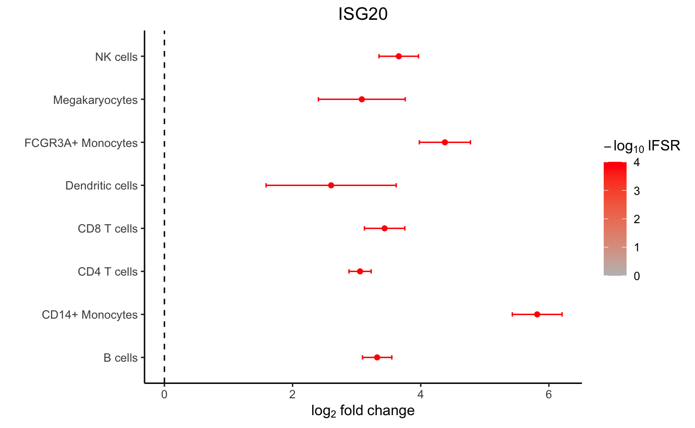
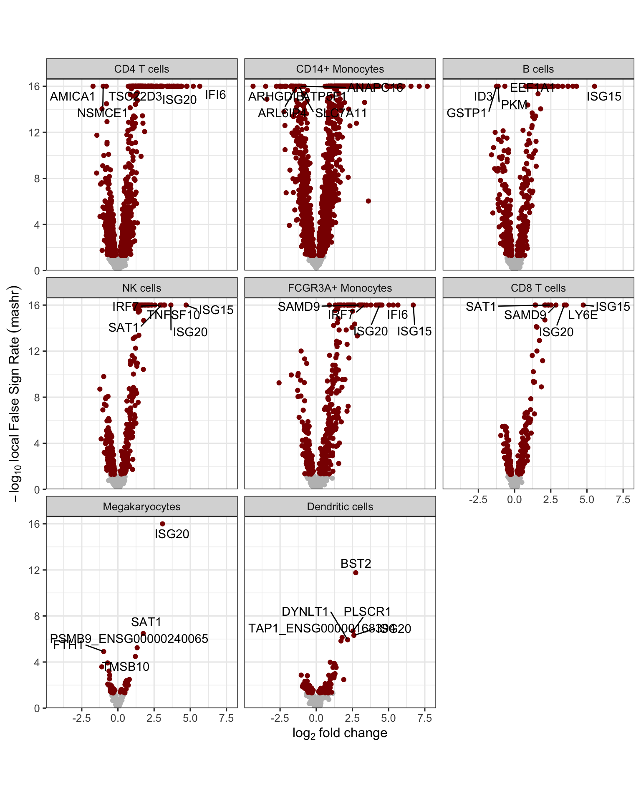

mashr analysis after dreamlet
Borrowing information across genes and cell types
Developed by Gabriel Hoffman
Run on 2023-02-28 09:15:02
Source:vignettes/mashr.Rmd
mashr.Rmdmashr
is a Bayesian statistical method to borrow information across genes and
cell type (Urbut,
et al, 2019). mashr
takes estimated log fold changes and standard errors for each cell type
and gene from dreamlet, and produces posterior estimates
with more accuracy and precision then the original parameter
estimates.
Standard dreamlet analysis
Preprocess data
Here single cell RNA-seq data is downloaded from ExperimentHub
library(dreamlet)
library(muscat)
library(ExperimentHub)
library(zenith)
library(scater)
# Download data, specifying EH2259 for the Kang, et al study
eh <- ExperimentHub()
sce <- eh[["EH2259"]]
# only keep singlet cells with sufficient reads
sce <- sce[rowSums(counts(sce) > 0) > 0, ]
sce <- sce[,colData(sce)$multiplets == 'singlet']
# compute QC metrics
qc <- perCellQCMetrics(sce)
# remove cells with few or many detected genes
ol <- isOutlier(metric = qc$detected, nmads = 2, log = TRUE)
sce <- sce[, !ol]
# compute normalized data
sce <- sce[rowSums(counts(sce) > 1) >= 10, ]
sce <- computeLibraryFactors(sce)
sce <- logNormCounts(sce)
# set variable indicating stimulated (stim) or control (ctrl)
sce$StimStatus = sce$stimAggregate to pseudobulk
# Since 'ind' is the individual and 'StimStatus' is the stimulus status,
# create unique identifier for each sample
sce$id <- paste0(sce$StimStatus, sce$ind)
# Create pseudobulk data by specifying cluster_id and sample_id
# Count data for each cell type is then stored in the `assay` field
# assay: entry in assayNames(sce) storing raw counts
# cluster_id: variable in colData(sce) indicating cell clusters
# sample_id: variable in colData(sce) indicating sample id for aggregating cells
pb <- aggregateToPseudoBulk(sce,
assay = "counts",
cluster_id = "cell",
sample_id = "id",
verbose = FALSE)
dreamlet for pseudobulk
# Normalize and apply voom/voomWithDreamWeights
res.proc = processAssays( pb, ~ StimStatus, min.count=5)
# Differential expression analysis within each assay,
# evaluated on the voom normalized data
res.dl = dreamlet( res.proc, ~ StimStatus)Run mashr analysis
# run mashr model to borrow information across genes and
# cell types in estimating coefficients' posterior distribution
res_mash = run_mash(res.dl, coef='StimStatusstim')Summarize mashr results
Compute summary of mashr posterior distributions
library(mashr)
# extract statistics from mashr model
# NA values indicate genes not sufficiently expressed
# in a given cell type
# original logFC
head(res_mash$logFC.original)[1:4, 1:4]## B cells CD14+ Monocytes CD4 T cells CD8 T cells
## A1BG NA NA -0.5198987 NA
## AAAS NA NA -0.5396948 NA
## AAED1 NA 1.505068 0.1167030 NA
## AAK1 NA NA -0.9574641 NA## B cells CD14+ Monocytes CD4 T cells CD8 T cells
## A1BG NA NA -0.35942648 NA
## AAAS NA NA -0.33700049 NA
## AAED1 NA 1.435837 0.02311512 NA
## AAK1 NA NA -0.88586852 NA
# how many gene-by-celltype tests are significant
# i.e. if a gene is significant in 2 celltypes, it is counted twice
table(get_lfsr(res_mash$model) < 0.05, useNA="ifany")##
## FALSE TRUE <NA>
## 9484 4857 29971
# how many genes are significant in at least one cell type
table( apply(get_lfsr(res_mash$model), 1, min, na.rm=TRUE) < 0.05)##
## FALSE TRUE
## 3051 2488
# how many genes are significant in each cell type
apply(get_lfsr(res_mash$model), 2, function(x) sum(x < 0.05, na.rm=TRUE))## B cells CD14+ Monocytes CD4 T cells CD8 T cells
## 548 1936 1057 266
## Dendritic cells FCGR3A+ Monocytes Megakaryocytes NK cells
## 94 434 48 474
# examine top set of genes
# which genes are significant in at least 1 cell type
sort(names(get_significant_results(res_mash$model)))[1:10]## [1] "ACTB" "ACTG1_ENSG00000184009" "ARPC1B"
## [4] "ARPC5" "ATP6V0E1" "ATP6V1G1"
## [7] "B2M" "BTF3" "BTG1"
## [10] "CALM1"
# There is a lot of variation in the raw logFC
res_mash$logFC.original["ISG20",]## B cells CD14+ Monocytes CD4 T cells CD8 T cells
## 3.318743 5.892474 3.051876 3.454028
## Dendritic cells FCGR3A+ Monocytes Megakaryocytes NK cells
## 2.339701 4.407411 3.008427 3.661383
# posterior mean after borrowing across cell type and genes
get_pm(res_mash$model)["ISG20",]## B cells CD14+ Monocytes CD4 T cells CD8 T cells
## 3.317906 5.833697 3.052511 3.444354
## Dendritic cells FCGR3A+ Monocytes Megakaryocytes NK cells
## 2.552804 4.383058 3.071633 3.657611Gene set analysis
Perform gene set analysis with zenith using posterior
mean for each coefficient
# gene set analysis using mashr results
library(zenith)
# Load Gene Ontology database
# use gene 'SYMBOL', or 'ENSEMBL' id
# use get_MSigDB() to load MSigDB
go.gs = get_GeneOntology(to="SYMBOL")
# valid values for statistic:
# "tstatistic", "abs(tstatistic)", "logFC", "abs(logFC)"
df_gs = zenith_gsa(res_mash, go.gs)
# Heatmap of results
plotZenithResults(df_gs, 5, 1)
# forest plot based on mashr results
plotForest(res_mash, "ISG20") 
Volcano plot based on local False Sign Rate (lFSR) estimated from the posterior distribution of each coefficient.
# volcano plot based on mashr results
# yaxis uses local false sign rate (lfsr)
plotVolcano(res_mash)